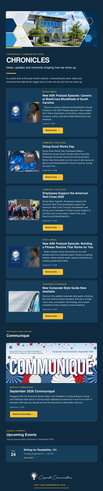
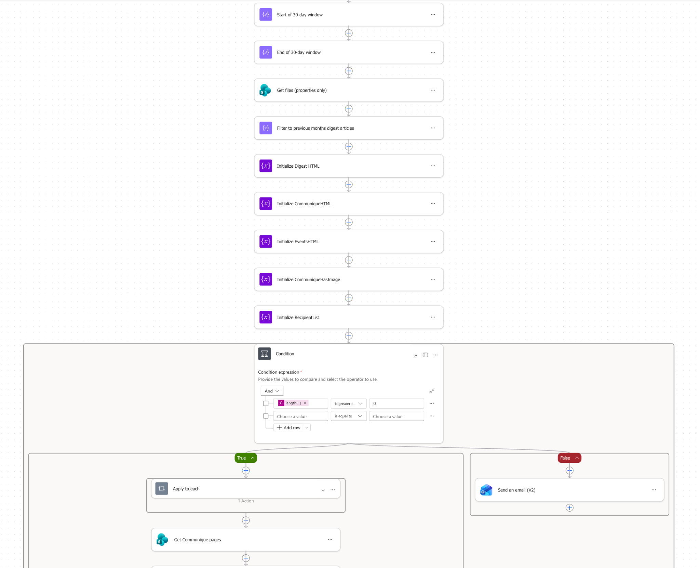

Case study / Corporate Communications Chronicles
Turn scattered updates into a shared story.
I connected department news on SharePoint with a monthly email digest for approximately 200 stakeholders. Corporate Communications Chronicles brings recent updates and upcoming training into one place, helping people see the work across the department and know where to go next.
See the populated digest and workflow ↓At a glance
- What I owned
- I implemented department SharePoint news and developed an AI-assisted HTML monthly digest through Power Automate.
- The decision
- Publish updates at their source, then connect recent news and upcoming training in one recurring stakeholder email.
- The outcome
- A monthly digest serving approximately 200 stakeholders, bringing department news and upcoming training into a shared channel.
The work needed a shared audience.
The departments within Corporate Communications had changes, updates, and practical advice to share. We needed a way for those stories to travel across the department and reach other stakeholders throughout the organization.
The aim was to make it easier to understand what Corporate Communications was doing, find useful guidance, and keep up with opportunities to learn.
The decision: publish at the source, connect the story.
I implemented news articles on the individual department SharePoint pages, with a collected view on the Corporate Communications homepage. Each department’s updates could live alongside its work, while the homepage gave readers a broader view.
I then connected that publishing structure to a monthly digest. SharePoint held the articles; the email brought them to people who needed to see them. This gave Corporate Communications a consistent way to present its work across the organization.
Build a rhythm people could use.
I used AI to help develop the HTML email and implemented the digest through Power Automate. The workflow pulls news from the previous 30 days and training events scheduled within the next 30 days. The digest also has a separate section for the current Communiqué.
The email brings department labels, article summaries, images, dates, and links together in a consistent format. Readers can scan the month’s updates, open an article for more detail, or find an upcoming training event.
Implementation included resolving repeated articles, correcting SharePoint article links, and getting embedded images to display in Outlook. Those details mattered because the digest had to be useful when it reached someone’s inbox.
A shared channel for roughly 200 stakeholders.
Chronicles now connects approximately 200 stakeholders across the organization through a recurring view of Corporate Communications news and training. The result is a working communication channel with a clear source, a regular cadence, and a defined audience.
The digest gives those stakeholders a regular way to find updates and training. Its purpose is to help Corporate Communications shape how its work is understood across the organization.
Work samples
The email people receive, and the workflow behind it.
This September 2026 edition combines Social Media, Community Relations, and Corporate Standards updates, followed by Communiqué and an upcoming writing workshop. The example shows how distinct department stories become one digest without losing their source.

See a Power Automate workflow excerpt

Next project
Notion editorial workspace